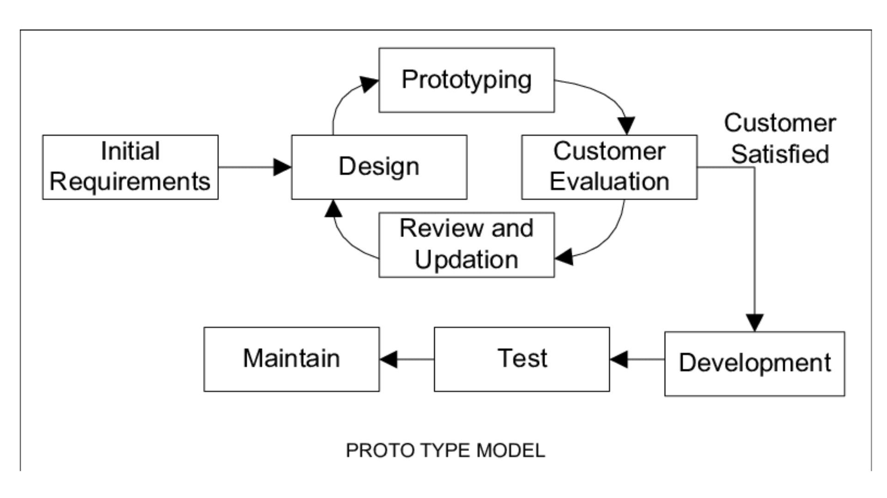

Prototüüpimismudeli põhiidee on varajane prototüüp ja kliendi tagasiside. Prototüüp aitab kliendil paremini
aru saada, milline süsteem välja näeb ja kuidas see töötab, ning võimaldab oma soove täpsustada juba arenduse alguses
enne lõpliku lahenduse arendamist.
Etappide kirjeldus
Prototüüpimise mudeli tsükkel tavaliselt koosneb järgmistest ettapidest,
mida korratakse(iteratsioon):
Prototüüp luuakse kiiresti ning see ei pea sisaldama kogu funktsionaalsust,
vigade kontrolli ega mittefunktsionaalseid nõuded (nt turvalisus).
Arendusmudeli joonis:

Prototüüpimise tüübid:
Head ja halvad küljed:
Head küljed:
Halvad küljed:
Parem kliendisuhtlus ja tagasiside (klient näeb lahendust
ja saab soove täpsustada).
Ebapiisav testimine prototüübi faasis võib
viia probleemideni hiljem.
Vähendab arenduskulusid hilisemates faasides
(muudatusi on odavam teha alguses).
Liigne detailiseerimine ja ajakulukus, eriti kui
puudub selge struktuur.